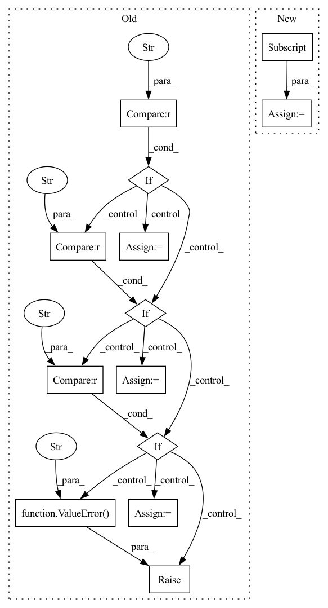

Pattern ID :15343

Before Change
loss_instance_l = loss_class_l()
loss_instance_r = loss_class_r() if not isinstance(loss_class_r, int) else loss_class_r
if op == "sum":
mixed = loss_instance_l + loss_instance_r
sign = "+"
elif op == "mul":
mixed = loss_instance_l * loss_instance_r
sign = "*"
elif op == "div":
mixed = loss_instance_l / loss_instance_r
sign = "/"
elif op == "pow":
mixed = loss_instance_l ** 2
sign = "**"
else:
raise ValueError("Unrecognized op")
weights = (torch.ones(n_samples, n_assets) / n_assets).to(device=y_dummy.device, dtype=y_dummy.dtype)
losses = mixed(weights, y_dummy)
After Change
true_tensor = python_operator(loss_instance_l(weights, y_dummy),
loss_instance_r(weights, y_dummy) if not r_is_constant else loss_class_r)
sign = {"add": "+", "truediv": "/", "mul": "*", "pow": "**"}[op]
mixed_tensor = mixed_loss(weights, y_dummy)
assert torch.is_tensor(mixed_tensor)
In pattern: SUPERPATTERN
Frequency: 3
Non-data size: 13
Instances
Fragment ID: 52069402
Project Name: jankrepl/deepdow
Commit Name: cd0fa7772131cebf9a6abfcdd09474b1a20c4fc8
Time: 2020-06-22
Author: jankrepl@yahoo.com
File Name: tests/test_losses.py
M Class Name: TestAllLosses
N Class Name: TestAllLosses
M Method Name: test_arithmetic(4)
N Method Name: test_arithmetic(4)
M Parent Class:
N Parent Class:
M File Name: tests/test_losses.py
N File Name: tests/test_losses.py
M Start Line: 205
M End Line: 235
N Start Line: 207
N End Line: 237
'>
Before Change
]
// select optimizer
if self.optimizer == "sgd":
optimizer = torch.optim.SGD
elif self.optimizer == "adam":
optimizer = torch.optim.Adam
elif self.optimizer == "adamw":
optimizer = torch.optim.AdamW
else:
raise ValueError(f"{self.optimizer} not in (sgd, adam, adamw)")
// create optimizer
optimizer = optimizer(
self.learnable_params,
After Change
]
assert self.optimizer in self._OPTIMIZERS
optimizer = self._OPTIMIZERS[self.optimizer]
// create optimizer
optimizer = optimizer(
self.learnable_params,
'>
Fragment ID: 52069435
Project Name: vturrisi/contrastive-learning
Commit Name: 379df0c9e7dfae24c046955f0f1c02e096f90bd5
Time: 2022-06-10
Author: vt.turrisi@gmail.com
File Name: solo/methods/base.py
M Class Name: BaseMethod
N Class Name: BaseMethod
M Method Name: configure_optimizers(1)
N Method Name: configure_optimizers(1)
M Parent Class: pl.LightningModule
N Parent Class: pl.LightningModule
M File Name: solo/methods/base.py
N File Name: solo/methods/base.py
M Start Line: 433
M End Line: 459
N Start Line: 428
N End Line: 429
'>
Before Change
// Pooling
// out: (BB, embedding_dim, NN)
if self._pooling_func_name == "max":
out = torch.max(out, -1, keepdim=True)[0]
elif self._pooling_func_name == "mean":
out = torch.mean(out, keepdim=True, dim=-1)
elif self._pooling_func_name == "sum":
out = torch.sum(out, keepdim=True, dim=-1)
else:
raise ValueError(f"Pooling function {self._pooling_func_name} is not yet supported!")
// out: (BB, embedding_dim, 1)
out = torch.flatten(out, start_dim=-2)
After Change
masking_input = {"in_tensor": out.transpose(2, 1)}
if self.use_masking:
masking_input["mask_tensor"] = masking_tensor
out = self.pooling_block(masking_input)["masking_out"]
// output_tensor: (BB, embedding_dim)
// out: (BB, embedding_dim)
out = self.fc1(out)
'>
Fragment ID: 52069357
Project Name: enlite-ai/maze
Commit Name: 53a9f4e4997b8a5451f14fb57dd6c5cb9becd110
Time: 2021-04-15
Author: office@enlite.ai
File Name: maze/perception/blocks/feed_forward/point_net.py
M Class Name: PointNetFeatureTransformNet
N Class Name: PointNetFeatureTransformNet
M Method Name: forward(3)
N Method Name: forward(2)
M Parent Class: nn.Module
N Parent Class: nn.Module
M File Name: maze/perception/blocks/feed_forward/point_net.py
N File Name: maze/perception/blocks/feed_forward/point_net.py
M Start Line: 93
M End Line: 127
N Start Line: 80
N End Line: 134